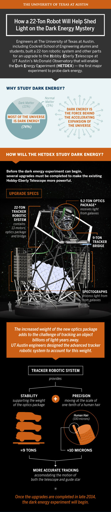

<div class="content-wrapper clearfix">

    <article class="content">

        <div class="row">
            <div class="col span_6">
                
                <!--  -->
            </div>
        </div>

        <div class="row">
            <div class="col span_6 center">
                <h1>Telescope Upgrade Infographic</h1>
                <div class="tagline">The upgraded Hobby-Eberly telescope will collect data on one million galaxies, creating the largest map of the universe ever made.</div>
            </div>
        </div>

        <div class="row">
            <div class="col span_4">
                <h2>Project Details</h2>
                <p>The HETDEX story is very technical, but worth telling. To make the information more consumable, we created this infographic which breaks down the research and equipment specs while building a case for the bigger question: why does the study of dark energy matter?</p>
            </div>
            <div class="col span_2 right">
                <h2>My Role</h2>
                <ul>
                    <li>Art Direction</li>
                    <li>Illustration</li>
                    <li>Some copywriting</li>
                </ul>
            </div>
        </div>    

    </article>
</div>
